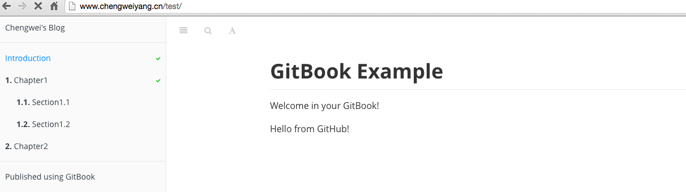

除了能夠將書籍發佈到 GitBook.com 外，還可以將書籍發佈到 GitHub Pages，由於沒有找到官方文檔，所以這裡記錄的是我自己正在使用的一種方法。
如果讀者不瞭解 GitHub Pages 為何物，簡單說就是一個可以託管靜態網站的 Git 項目，支持使用 markdown 語法以及 Jekyll 來構建，或者直接使用已經生成好的靜態站點。詳細可以參考 GitHub Pages 主頁。
由於 gitbook 書籍可以通過 gitbook 本地構建出 site 格式，所以可以直接將構建好的書籍直接放到 GitHub Pages 中託管，之後，可以通過如下地址訪問書籍：
<username>.github.io/<project>
例如：這本書中使用的例子 'test' 項目可以通過地址：chengweiv5.github.io/test 來訪問。
當訪問 chengweiv5.github.io/test 時，會訪問 chengweiv5/test 項目的 gh-pages 分支的內容，所以需要為項目創建一個 gh-pages 分支，並且將靜態站點內容放入其中。也就是說，test 項目將有如下兩個分支：
首先，使用 gitbook build 將書籍內容輸出到默認目錄，也就是當前目錄下的 _book 目錄。
$ gitbook build
Starting build ...
Successfully built!
$ ls _book
GLOSSARY.html chapter1 chapter2 gitbook glossary_index.json index.html search_index.json
執行如下命令來創建分支，並且刪除不需要的文件：
$ git checkout --orphan gh-pages
$ git rm --cached -r .
$ git clean -df
$ rm -rf *~
現在，目錄下應該只剩下 _book 目錄了，首先，忽略一些文件：
$ echo "*~" > .gitignore
$ echo "_book" >> .gitignore
$ git add .gitignore
$ git commit -m "Ignore some files"
然後，加入 _book 下的內容到分支中：
$ cp -r _book/* .
$ git add .
$ git commit -m "Publish book"
現在，可以將編譯好的書籍內容上傳到 GitHub 中 test 項目的 gh-pages 分支了，雖然這裡還沒有創建分支，上傳和創建會一步完成！
$ git push -u origin gh-pages
Counting objects: 49, done.
Delta compression using up to 4 threads.
Compressing objects: 100% (45/45), done.
Writing objects: 100% (49/49), 1.34 MiB | 131.00 KiB/s, done.
Total 49 (delta 5), reused 0 (delta 0)
To https://github.com/chengweiv5/test.git
* [new branch] gh-pages -> gh-pages
Branch gh-pages set up to track remote branch gh-pages from github.
現在，書籍的內容已經上傳到 GitHub 上，所以通過訪問 chengweiv5.github.io/test 就可以閱讀 test 這本書了！

注意：由於我將 chengweiv5.github.io 重定向到了個人站點 www.chengweiyang.cn，所以可以看到，瀏覽器中的 URL 自動變成了 www.chengweiyang.cn/test，非常 cool! 關於怎樣重定向 GitHub Pages 到個人域名，請參考博客：怎樣使用 GitHub Pages 搭建個人站點。